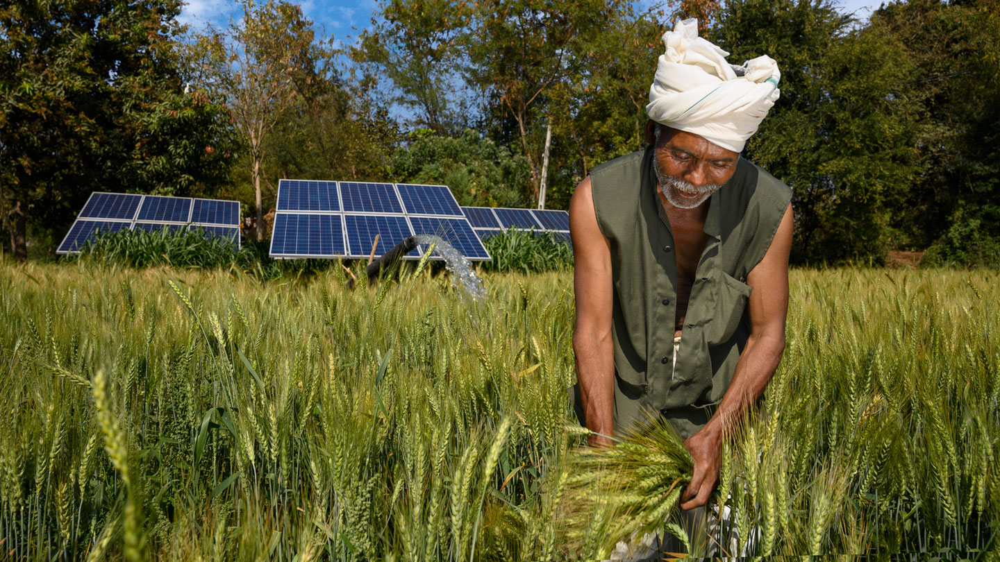

Farm Overview

Farmer Profile
- Name: John Doe
- Location: Farmville
- Crop: Tomato

Crop Details
- Variety: Cherry Tomato
- Planting Date: April 1, 2023
- Expected Harvest: June 15, 2023
Weed Infestation Level
Progress Tracker
- Number of Weeds Removed: 50
- Areas Treated: Grid A2, B4, C6
- Overall Improvement: 70%
Help and Support
FAQs
How often should I perform mechanical cultivation?
Mechanical cultivation is recommended within the first 4 weeks of tomato growth.
What are the labor requirements for manual removal of Amaranthus?
Manual removal of Amaranthus requires moderate labor.
Contact Information
Phone: 123-456-7890
Email: info@weedio.com